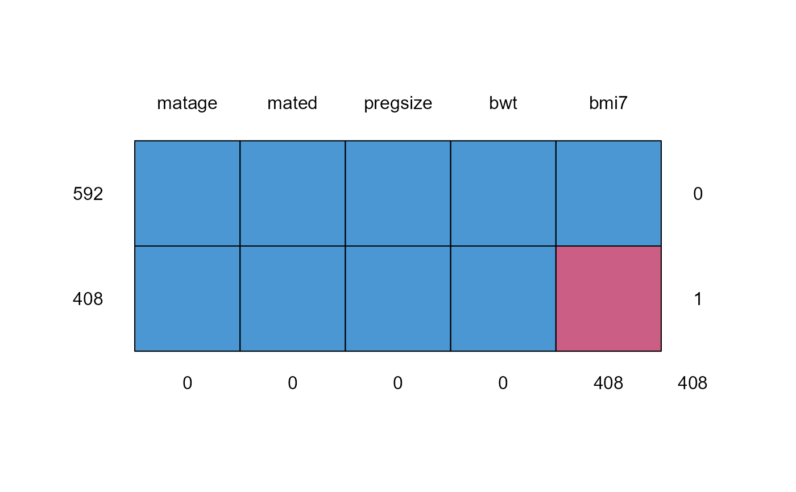

Lists missing data patterns in the specified dataset
descMissData.RdThis function summarises the missing data patterns in the specified dataset. Each row in the output corresponds to a missing data pattern (1=observed, 0=missing). The number and percentage of observations is also displayed for each missing data pattern. The first column indicates the number of missing data patterns. The second column refers to the analysis model outcome ('y'), with all other variables ('covs') displayed in subsequent columns. Alternatively, 'y' can be used to display the primary variable of interest, e.g. 'y' could refer to the exposure, with all other variables listed in 'covs'.
Arguments
- y
The analysis model outcome, specified as a string
- covs
The analysis model covariate(s), specified as a string (space delimited)
- data
A data frame containing the specified analysis model outcome and covariate(s)
- plot
If TRUE, displays a plot using md.pattern to visualise the missing data patterns; use plot = FALSE (the default) to disable the plot
Examples
descMissData(y="bmi7", covs="matage mated", data=bmi)
#> pattern bmi7 matage mated n pct
#> 1 1 1 1 1 592 59
#> 2 2 0 1 1 408 41
descMissData(y="bmi7", covs="matage mated pregsize bwt", data=bmi, plot=TRUE)

#> pattern bmi7 matage mated pregsize bwt n pct
#> 1 1 1 1 1 1 1 592 59
#> 2 2 0 1 1 1 1 408 41